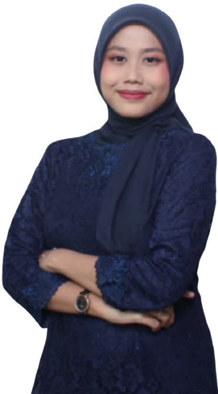

Halo, saya
Villiandra Assya
Lulusan Sarjana Kesehatan Masyarakat yang berpengalaman di administrasi kesehatan, pengolahan data, dan administrasi proyek.

Tentang saya
Saya lulusan baru Sarjana Kesehatan Masyarakat Universitas Muhammadiyah Jakarta. Pengalaman saya mencakup administrasi kesehatan, pengolahan dan analisis data, administrasi proyek, dan pelayanan kesehatan, yang saya dapatkan lewat magang, organisasi, dan praktik lapangan.
Saya teliti, disiplin, adaptif, dan bertanggung jawab. Saya terbiasa bekerja mandiri maupun dalam tim, dan ingin terus berkembang di bidang administrasi, pelayanan, dan operasional, khususnya di sektor kesehatan.
Pendidikan
Universitas Muhammadiyah Jakarta
Sarjana Kesehatan Masyarakat
September 2022 – September 2026
Pengalaman
Project Administration
Titik Dua, Bali
Februari 2026 – Maret 2026
- Mengawasi penerapan prosedur K3 di lingkungan kerja agar sesuai standar keselamatan dan risiko kerja berkurang.
- Mengidentifikasi bahaya dan menilai risiko di area kerja sebagai dasar pengendalian risiko kecelakaan kerja.
- Memastikan penggunaan Alat Pelindung Diri (APD) sesuai standar dan prosedur yang berlaku.
Administrasi Data Kesehatan
Puskesmas Bhakti Jaya, Tangerang Selatan
Juli 2024 – Agustus 2024
- Mengolah data kesehatan digital melalui aplikasi Satu Sehat secara teliti dan terstruktur untuk menjaga akurasi informasi.
- Menginput data survei dan informasi keluarga ke sistem berbasis website secara akurat dan sistematis.
- Memproses dan menginput 1.300 data hasil skrining peserta BPJS, dengan memastikan data lengkap, tepat, dan konsisten.
Praktik Belajar Lapangan
Puskesmas Situ Gintung
Februari – Juni 2025
- Melakukan identifikasi dan analisis 10 penyakit terbesar yang menjadi permasalahan kesehatan di wilayah kerja puskesmas.
- Melakukan Survei Mawas Diri (SMD) untuk mengidentifikasi kondisi, permasalahan, dan kebutuhan kesehatan masyarakat melalui pengumpulan data di wilayah Puskesmas Situ Gintung.
- Berpartisipasi dalam pelaksanaan Musyawarah Masyarakat Desa (MMD) bersama masyarakat dan pihak terkait untuk membahas hasil SMD serta menentukan prioritas masalah kesehatan.
- Melakukan intervensi kesehatan masyarakat berdasarkan permasalahan kesehatan prioritas yang ditemukan di wilayah Puskesmas Situ Gintung.
- Memberikan edukasi dan penyuluhan kepada warga mengenai upaya pencegahan dan pengendalian penyakit sesuai dengan permasalahan kesehatan yang ditemukan.
- Berkoordinasi dengan petugas puskesmas, kader, dan masyarakat dalam pelaksanaan kegiatan intervensi kesehatan.
Anggota Tim Peneliti
Program Kreativitas Mahasiswa (PKM)
Februari 2024 – April 2024
- Menganalisis kebijakan impor beras dan ketahanan pangan regional di Kabupaten Indramayu lewat tinjauan pustaka dan evaluasi dokumen kebijakan.
- Ikut menyusun proposal penelitian yang lolos seleksi tingkat universitas.
Anggota Tim Penulis
The 3rd Muhammadiyah International Public Health and Medicine Conference (MIPHC)
27 – 28 Juli 2023
- Ikut menyusun tinjauan pustaka ilmiah berjudul “Cigarette in The View of Islam and Health” lewat penapisan jurnal, sintesis data, dan penulisan kolaboratif.
- Mendalami perspektif ilmiah kesehatan masyarakat dan etika religius Islam.
- Memperluas wawasan dan jaringan dengan profesional kesehatan, peneliti, dan akademisi dari berbagai institusi nasional dan internasional.
Ketua Bidang Riset dan Pengembangan Keilmuan
Ikatan Mahasiswa Muhammadiyah (IMM)
November 2024 – November 2025
- Menggiatkan budaya literasi lewat program yang menumbuhkan minat baca dan diskusi ilmiah di kalangan kader.
- Meningkatkan kemampuan kader menulis karya ilmiah agar mampu berpikir kritis dan menuangkan ide dalam karya yang bermanfaat.
Koordinator Departemen Minat dan Bakat
Badan Eksekutif Mahasiswa (BEM)
Agustus 2024 – Juli 2025
- Mengembangkan minat dan bakat mahasiswa Kesehatan Masyarakat, baik akademik maupun nonakademik.
- Menjalin kerja sama dengan pihak internal dan eksternal untuk memperluas kesempatan mahasiswa.
- Mengadakan pelatihan untuk meningkatkan kemampuan dan keterampilan mahasiswa Fakultas Kesehatan.
Sertifikasi & Lisensi
Sertifikat dari kegiatan penelitian dan konferensi ilmiah yang saya ikuti. Klik kartu untuk melihat sertifikat dalam ukuran penuh.
Keahlian
Microsoft Office
Pengolahan dokumen dan data untuk kebutuhan administrasi.
Administrasi Kesehatan
Mengelola administrasi, data, dan dokumen untuk mendukung kelancaran pelayanan serta kegiatan operasional di bidang kesehatan.
Manajemen Dokumen
Pengelolaan dokumen yang rapi, lengkap, dan konsisten.
Analisis Data
Kemampuan mengolah dan memahami data kesehatan untuk menemukan informasi, pola, dan hasil yang dapat membantu dalam pengambilan keputusan.
Bahasa
Sikap kerja
- Teliti
- Disiplin
- Adaptif
- Bertanggung jawab
- Komunikasi yang baik
Mari terhubung
Saya terbuka untuk peluang di bidang administrasi, pelayanan, dan operasional kesehatan.